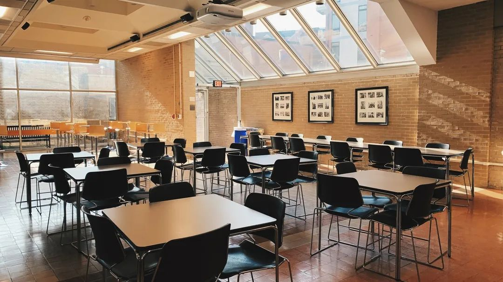
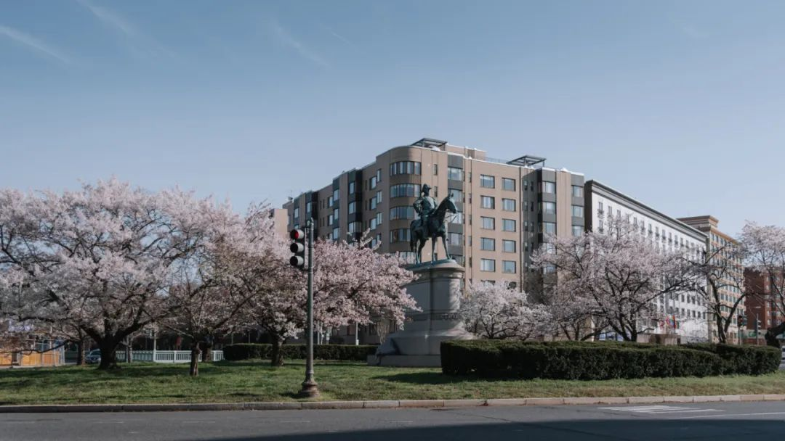
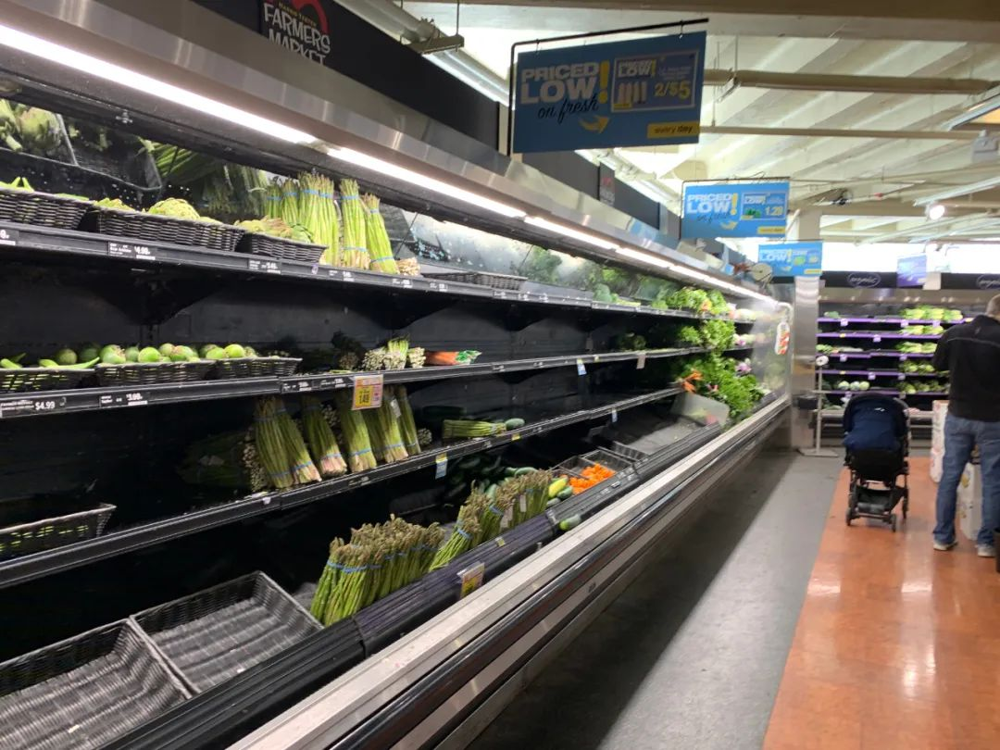

亲历英国抗疫：华人胆战心惊，老外跟风囤货
原文链接 备份链接 意大利确诊数破千时，大部分英国人还在隔岸观火，有人甚至拿新冠病毒开玩笑。如今英国人聚集的社交网络上多的是祈祷上帝保佑的推文。有人调侃说，老外都跟在华人后面逛超市，华人买什么他们就买什么 文 |《财经》驻英国特约作者 文 …
昨日收到close buildings的通知，重新开放不知何时。最近每天从网上接受着周遭的消息，从窗外看出去只有一小方路面，虽然依旧车流不息，每天傍晚依旧跑步的跑步，遛狗的遛狗，遛娃的遛娃，但颇有咫尺千里之感。掐指一算，social distancing了也快有一周了，今天就趁这个机会去拿掉留在学校的东西，顺便看一看外面的世界吧。
（长期手残眼残，摄影水平濒临熔断。意会一下吧。）
一路上熟悉的店铺都贴出了pick-up/delivery only的告示，店里的椅子不是被撤走就是被翻起，有些喜欢的小餐馆也关了门，冷冷清清的，恍惚间像过了个年。原本雪白一片（未经确实）的梨花已经已经长出了叶子，远远看去一片青光🤭。好在樱花和玉兰已经接上，又是一副春和景明。真叫人感慨红的像火，粉的像霞，白的像雪，心旷神怡，宠辱偕忘，把酒临风，其喜洋洋者矣。
楼前的樱花似是一夜间开的，又似乎不是。往日熙熙攘攘的楼里已经冷冷清清，不见人影，只有保安大叔和保洁阿姨还在维护着这栋空楼的运行。相见时难别亦难，也不知下次相逢又是何时了。


拿完东西，便开始了闲逛。突然觉得，如果没有疫情，DC的春天真是太适合小情侣谈恋爱了。日益手残的我得极力克制，不然一不小心就糖水片了。


（比如说下图的这个翻车花絮，一不小心糖的连妈都不认识了。）

印象中我是没怎么见过一大片的樱花的。在上海那么多年，因为怕人多，所以从来没有去顾村或者同济轧过闹忙。交大虽然也有樱花，但我从来没找到过樱花卡都是零零散散的，美则美矣，难成气候。今天还没走到Tidal Basin，远远地就瞧见了湖边的一圈樱花。还未到盛花期，但也算是难得的景致了。不过着实是老法师不友好，哦不，老法师友好，法师不友好（可能有花有水的地方就有老法师长枪大炮顺带打鸟吧）。这个人来人往的，虽然不算多，但是路窄，尤其是疫情期间，不管大家头不头大，反正我是头大了。
Btw，建议大家以后带上小姐姐来。虽然你还是能候到路上没人的时候，但相当困难。而且这里不比亚洲，时不时能蹭到个漂亮姐姐入镜，在这儿讲不定入镜的就是沉思的黑哥哥👇（而且这些哥大都喜欢穿深色的衣服，你这后期一拉，树干也跟着变，脸也跟着变……反之你拉树干，衣服也跟着变，脸也跟着变……反正是绝了……）

回来的路上录了些片段，加上近期杂七杂八的，捏了个视频，看着玩儿吧。
其实家里什么都不缺，但出于想折腾些别的，就还是去了超市溜达了一下。结果我只能说上文的“绝了”说早了， 这超市才是真的绝了。

近九成的蔬菜卖掉了，肉架上也空了一大半，水也只剩大桶水了还不多，全世界都在囤的厕纸见都见不着，餐巾纸还有一些，杀菌洗手液和消毒用品也见不着，麦片也剩下不多了，茶都没剩多少，连面粉都卖完了（我应该去看眼大家盐还囤不囤的🙄️），本宝宝想买个豆腐和蜂蜜都么得了？？？观察了下工作人员在补的货，发现货源蜜汁充足的有水果、蛋、奶、酒、厨房用纸？（Come on. They are not substitute!）哦还有卷心菜（怎么突然所有超市都那么多卷心菜了，我怀疑是不是调动储备卷心菜了？？？）而且这个补货和缺货的差异，简直是生动形象地阐释了那八个字“旱的旱死，涝的涝死”。（至于为什么这次只有这一张图用于论证，因为我觉得又摸商品又摸手机实在是忒哦搓了，还是好觉吧🙄️。）
秉持着好不容易出一次门就要多走点路多体察下社情的理念，买豆腐无果的我随后又去了家附近的三家小超市逛了逛，结果两家告诉我卖完了，一家告诉我他们不卖豆腐。虽然可能美国人对豆腐的需求算不上大所以供应也不会很多，但是！这也太绝了吧？！买个豆腐都那么难的吗？！意思是我想买块豆腐撞死都不行了？？？这个供应我真瑞思拜了？？？不过我发觉这边中午才补货，所以朋友们不妨以后下午/晚上去采购。
而且说真的，我今天只在路上看到一个黑人大哥把鼻子露出来式戴了口罩，在Harris Teeter首次看到一个白人大姐戴了口罩，别的人该干嘛干嘛，丝毫感觉不到疫情的气息。所以，从日常行为来看，一片安逸祥和，雄姿英发，天下太平。但是从消费行为来看，满目萧然，囤货间，樯橹灰飞烟灭，明天就是人类的终点。各位大爷大妈大哥大姐你们真的不觉得自相矛盾吗😂。
果不其然，出去溜达一圈回到家，又熔断了。Fine：）
下午人在家中坐，邮件天上来，剩下的课，网课全部承包了。Fine：）
人生在世，身不由己。朋友们，照顾好自己，要努力地开心。期待着下一次的久别重逢。
原文链接 备份链接 意大利确诊数破千时，大部分英国人还在隔岸观火，有人甚至拿新冠病毒开玩笑。如今英国人聚集的社交网络上多的是祈祷上帝保佑的推文。有人调侃说，老外都跟在华人后面逛超市，华人买什么他们就买什么 文 |《财经》驻英国特约作者 文 …
原文链接 备份链接 “ - 疫 情 之 下 - 疫情没有结束，我们的工作仍在继续。在这场“战疫”中，我们的付出终有所获，经营户对我们的理解，人民群众对我们的信任，鼓舞着我们在疫情蔓延的环境下不断向前。 ” 我的朋友是一名市场监督管理所的 …
原文链接 备份链接 【编者按】 28日，我们收到了一位名为“尘香”的读者来信，她是武汉人，退休在家，和丈夫、女儿、女婿一起留守在武汉市江汉区：截至2020年1月29日24时，武汉市累计报告新型冠状病毒感染的肺炎病例已达2261例，死 …
原文链接 备份链接 非常时期，武汉成了全国人民挂念、祈福的城市。封城后，武汉人民的真实生活是什么样？ 正和岛自1月26日起特别推出《叶青：我在武汉疫区的第N天》专栏。叶青是一位定居武汉40年的市民，也是一名学者和官员。接下来的一段时间，他 …
原文链接 备份链接 在疫情期间，仅仅是湖北省妇幼保健院40天就有2207个新生儿降生。日均分娩量77人，最多的一天有108个新生儿来到这个世界。这些与疫情同时到来的孩子们，面临了新生儿物资的紧缺，和被感染的风险。 文｜许言 编辑｜桑柳 …